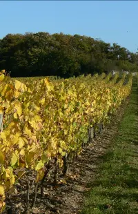
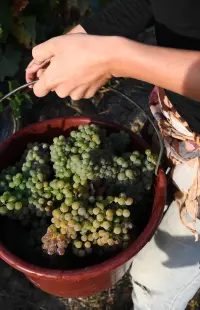
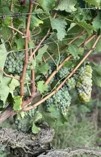
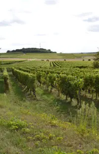
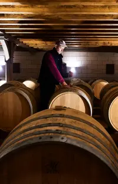
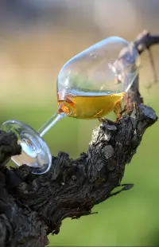
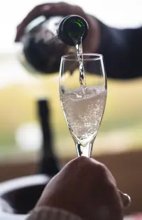
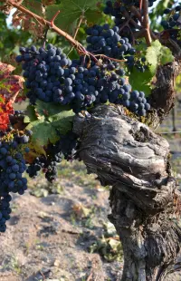

La région autour d'Angers est renommée pour ses vins d'exception. Voici les appellations que nous vous recommandons :
💎 Notre Coup de Cœur
🍇 Cépage: Chenin Blanc
🏔️ Terroir: Schistes face à la Loire
📍 Superficie: 350 hectares
🎨 Couleur: Vin Blanc Sec

Aromatique, élégant et minéral. Vin blanc intemporel et raffiné à conserver minimum 5 ans. Trois appellations : AOC Savennières, Roche aux Moines, Coulée de Serrant.
🍯 Minéral
🌿 Élégant
⏳ Garde 5-20 ans
🥂 Grandes occasions
🍇 Cépage: Chenin Blanc
🏔️ Terroir: Schistes et argiles
📍 Superficie: 1 700 hectares (27 communes)
🎨 Couleur: Vin Blanc Moelleux

Plus grande appellation de vins doux de la Loire. Vendanges tardives avec noble pourriture, développant des arômes de fruits secs, exotiques et agrumes. Six villages peuvent ajouter leur nom.
🍯 Moelleux
🍑 Fruits confits
🍯 Miel & Coing
🧀 Foie gras
🍇 Cépage: Chenin Blanc
🏔️ Terroir: Schistes briovériens
📍 Superficie: 30 hectares (le plus rare)
🎨 Couleur: Grand Cru

Seul Grand Cru de la Loire (2011). Vins dorés et complexes aux notes de fruits confits et miel. Microterroirexceptionnel avec pourriture noble, vieillissement 20-25 ans minimum.
👑 Grand Cru
🥇 Prestige
🍯 Liquoreux
💎 Collectionneur
🍇 Cépage: Cabernet Franc (85%+)
🏔️ Terroir: Tuffeau calcaire
📍 Superficie: 1 500 hectares (9 communes)
🎨 Couleur: Vin Rouge

Vin rouge de référence de la Loire. Couleur grenat brillante, arômes de fruits rouges (framboise, cassis), notes florales de violette. Corps léger à moyen, acidité vive.
🍇 Fruits rouges
🌸 Floral
⏳ Garde 5-20 ans
🥩 Viandes grillées
🍇 Cépages: Cabernet Franc & Sauvignon
🏔️ Terroir: Schistes du Massif Armoricain
📍 Superficie: 200 hectares (46 communes)
🎨 Couleur: Vin Rouge

AOC créée en 1991 pour les rouges d'exception. Couleur rouge profonde, arômes de fruits noirs. Tanins marqués, garde 5-6 ans. Parfait avec viandes grillées servies à 16°C.
🍇 Fruits noirs
💪 Tannique
🥩 Viandes rouges
🌿 Terroir
🍇 Cépage: Chenin Blanc
🏔️ Terroir: Bords du Layon
📍 Superficie: 120 hectares (Thouarcé)
🎨 Couleur: Vin Blanc Moelleux

Vin moelleux historique (1055), le plus léger des vins doux. Couleur dorée aux reflets orangés, arômes de fruits secs et blancs, notes florales. Vieillissement indéfini.
🏛️ Historique
🍯 Gelée de fruits
🌸 Floral
🧀 Foie gras
🍇 Cépages: Chenin, Chardonnay, Cabernet
🏔️ Terroir: Anjou-Saumur & Touraine
📍 Pression: 4 atmosphères (vs 3 Anjou Mousseux)
🎨 Couleur: Vin Effervescent

Méthode traditionnelle, investissement des grandes maisons champenoises, avenir prometteur. Blanc ou rosé, parfait pour apéritif ou toast festif. Qualité supérieure garantie.
🍾 Bulles fines
🥂 Apéritif
🎉 Fête
✨ Méthode traditionnelle
💎 Notre Coup de Cœur
🍇 Cépages: Cabernet Franc & d'Anjou
🏔️ Terroir: Vallée de la Loire
📍 Style: Frais et léger
🎨 Couleur: Vin Rosé

Vins rosés légers à déguster frais sous la tonnelle. Parfait accompagnement pour charcuteries et salades composées. Fraîcheur et convivialité estivale.
🌿 Léger
🌞 Estival
🥗 Charcuterie
❄️ Frais